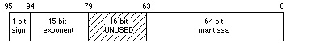

|
|
This Technical Note discusses MPW's -mc68881 option, which represents
Extended values in 96 bits (instead of 80, as with software SANE), and
compatibility issues when using non-SANE system calls that expect 80-bit
Extended values.
[Jul 01 1990]
|
MPW Compilers and Extended Values
The MPW 2.0 and later compilers provide a command-line option,
-mc68881, to generate in-line code to use the Motorola 68881/68882
floating-point units (FPU). (Note that MPW compilers currently do not include a
-mc68882 option, as they treat the two chips the same. If you want to
optimize code for the 68882, then you need to write your own assembly-language
code.) This option allows applications to sacrifice compatibility with other
Macintosh models (those not equipped with an FPU) in exchange for much
increased numeric performance.
|
Warning:
Applications should not make assumptions about the presence of
an FPU based upon the microprocessor of a Macintosh. If an application makes a
conditional branch to execute floating-point instructions directly, then it
should first explicitly check for the presence of the FPU with
_Gestalt or _SysEnvirons. Furthermore, you should not assume
that the presence of an MC68040 processor guarantees access to floating-point
instructions. Motorola has announced a reduced-cost MC68040 CPU that lacks an
integral floating-point unit. Possible inclusion of such a CPU in future
Macintosh products means FPU-less 68040 products may someday exist.
|
When using the -mc68881 option, the compiler stores all
Extended values in the 96-bit format used by the 68881 instead of the
80-bit software SANE (Standard Apple Numerics Environment), both of which are
illustrated in Figures 1 and 2.
Figure 1. Software SANE Format (80-Bit)

Figure 2. MC68881 Format (96-Bit)
This difference in format affects all procedures that accept floating-point
values as arguments, since all floating-point arguments are converted to
Extended before being passed, no matter how they are declared (for
example, Real, Single, Double, or Comp).
When compiling with this option, you must link with a special SANELib library
file, SANE881Lib.o; the interface source file SANE.p contains
conditional-compilation statements to make sure that the correct library's
interface is compiled. In this situation, SANE procedures are used for certain
transcendental functions only (see the last section of this Technote), and
these functions, which are in SANE881Lib.o, expect their Extended
parameters in 96-bit format.
However, numeric routines that are not compiled by Pascal (such as any
assembly-language routines) have no way of finding out that their parameters
are in 96-bit format. If it is not possible to rewrite these routines for
96-bit values, you can use the SANELib routines X96ToX80 and
X80ToX96 to convert between formats. It might be simplest to define a
new interface routine that automatically converts the formats:
Pascal
{FPFunc is a generic floating-point, assembly-language function that accepts}
{an 80-bit Extended parameter and returns an 80-bit result.}
{We've changed the types to reflect that these are not 96-bit values.}
FUNCTION FPFunc(x: Extended80): Extended80; EXTERNAL;
{Given that we're compiling in -mc68881 mode, the compiler}
{thinks that Extended values are 96-bits long, but FPFunc wants an}
{80-bit parameter and produces an 80-bit result; we convert.}
FUNCTION FPFunc96(x: Extended): Extended; {x is a 96-bit extended!}
BEGIN
{convert our argument, call the function, then convert the result}
MyFPFunc := X80ToX96(FPFunc(X96ToX80(x))); {call the real FPFunc}
|
C
extern Extended80 FPFunc (Extended80 x);
Extended FPFunc96 (Extended x); //x is a 96-bit extended!
{
//convert our argument, call the function, then convert the result
MyFPFunc = X80ToX96(FPFunc(X96ToX80(x))); //call the real FPFunc
|
It's best to avoid compiling some parts of an application with the
-mc68881 option on and other parts with it off; very strange bugs can
occur if you try this. Note that 80-bit code and 96-bit code cannot reference
the same Extended variables. There is no way to tell whether a given
stored value is in 80-bit format or 96-bit format.
Size of Data Structures
Compile time differences in the size of extended variables also cause problems
for variables embedded in data structures. The size of data structures and
offsets within the structure can change depending on the compile-time options.
This could be particular troublesome of you write the data to a file and then
attempt to read the file with a version of the program which was compiled
differently.
An example of this can be found in some of the Sound Manager interfaces. For
example, prior to MPW 3.2.1, the ExtSoundHeader record contained an extended
field which could cause the problem described above. In MPW 3.2.1, the
extended field was changed to the uniform type extended80 to avoid the
problem.
Back to top
SANE on the Macintosh II
The version of SANE provided in the Macintosh II ROM recognizes the presence of
the 68881 and uses it for most calculations automatically. SANE still expects
(and produces) 80-bit-format Extended values; it converts to and from
96-bit format internally when using the 68881.
Back to top
A Note About 68881 Accuracy and Numeric Compatibility
SANE is more accurate than the 68881 when calculating results of certain
functions (Sin, Cos, Arctan, Exp,
Ln, Tan, Exp1, Exp2, Ln1, and
Log2). To maintain this accuracy, SANE does not use 68881 instructions
to directly perform these functions; thus the results you get from SANE
calculations are still identical on all Macintosh systems.
To preserve this numeric compatibility with other SANE implementations, MPW
compilers normally do not generate in-line 68881 calls to the above functions,
even when the -mc68881 option is used; instead, they generate SANE
calls to accomplish them. If you are willing to sacrifice numeric compatibility
to gain extra speed, you can override this compiler feature with the
compile-time variable, Elems881; include the option -d Elems881 =
TRUE on the Pascal compiler and -Elems881 on the C compiler
command line to cause the compiler to generate direct 68881 instructions.
For certain other transcendental functions provided by the 68881 that are not
provided by SANE, MPW compilers generate direct 68881 calls if the
-mc68881 option is on, independent of the setting of the
Elems881 variable. These operations are Arctanh,
Cosh, Sinh, Tanh, Log10, Exp10,
Arccos, Arcsin, and Sincos.
For Pascal programmers, it is important to note that if you want an application
to check for an FPU and exit gracefully if it does not exist, then you need to
check for the FPU with code that does not have the -mc68881 option
turned on. You need to do this because the -mc68881 option inserts
code to initialize the 68881/68882 at the beginning of your code, and this
initialization code causes an exception error if no FPU is present. For
example, if you check for the existence of an FPU in your main Pascal
procedure, you need to compile that main procedure with {$MC68881-}.
Note that this compiler option affects the entire file that contains the
option, so you would need to separate any code that uses an FPU into another
file.
After you determine that an FPU exists, you have to execute the following
instructions by hand to initialize the FPU yourself:
PROCEDURE ClearTheFPU ();
INLINE $42A7, {clr.l -(a7)}
$42A7, {clr.l -(a7)}
|
Back to top References
Inside Macintosh, Volume V-1, Compatibility Guidelines
Apple Numerics Manual, Second Edition
M.OV.GestaltSysenvirons
M.HW.SpeedyMathCoProc
MPW Pascal Reference Manual
Back to top Change History
|
01-June-1990
|
Extended the warning about explicitly checking
for the presence of an FPU if an application uses floating-point instructions
to include the possibility of FPU-less MC68040 products and also raised the
issue of extended values embedded in data structures.
|
|
01-June-1987
|
Originally written.
|
Back to top Downloadables
|

|
Acrobat version of this Note (K).
|
Download
|
|